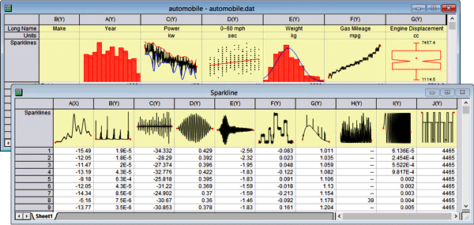

FAQ-479 Was ist eine Sparkline, und wie passe ich sie benutzerdefiniert an?
Sparkline
Letztes Update: 26.05.2022
Sparkline ist ein Begriff, der von Edward Tufte[1] geprägt wurde. Er bezieht sich auf ein kleines Diagramm, das den Dateninhalt grafisch darstellt und nützlich in ein Dokument eingebunden werden kann. Sie können in den Kopfbereich jeder Spalte Ihres Arbeitsblatts ein kleines grafisches Bild (Linien-, Boxdiagramm, Histogramm) mit den numerischen Daten einfügen. Markieren Sie die Spalte(n) und wählen Sie Spalte: Sparklines hinzufügen oder aktualisieren.
Es wird ein Dialog geöffnet, in dem Sie Y-Spalten gegen die zugehörige X-Spalte zeichnen können, Y gegen X zeichnen. Dieses Kontrollkästchen ist deaktiviert, d. h., standardmäßig werden alle Spalten (einschließlich X-Spalten) gegen den Arbeitsblattzeilenindex gezeichnet. Weitere Informationen zu diesem Dialog finden Sie in der Hilfe zu den X-Funktionen unter Sparklines.

Durch das Hinzufügen von Sparklines in Ihr Arbeitsblatt können Sie schnell die Form bzw. Verteilung der Daten über viele Spalten in einem Blatt anzeigen, ohne Diagrammfenster erzeugen zu müssen. Jedes Sparkline-Objekt ist tatsächlich ein eingebettetes Diagramm, das durch einen Doppelklick für die Bearbeitung aufgerufen werden kann.
 |
Sparklines können, in großer Anzahl, verusachen, dass Origin langsam wird. Sollte die Arbeit mit Ihrem Projekt schwierig sein und Sie vermuten, dass die Sparklines daran mit Schuld sind, können Sie das Erstellen von Sparklinen verhindern und die vorhandenen Sparklines im Projekt mit Hilfe der Systemvariable @SPK verbergen. Zusätzlich können Sie Sparklines aus dem aktuellen Projekt mit Hilfe von delete -spk löschen.
|
Schlüsselwörter:Diagramm, Kurve, Wortgröße, Ansicht, Daten, einbetten, Seitenverhältnis, verlängern, strecken
Origin-Version mind. erforderlich: 9.1 SR0